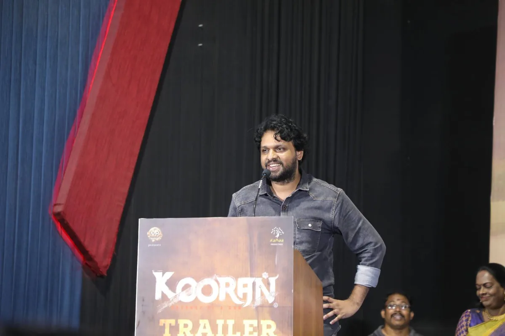
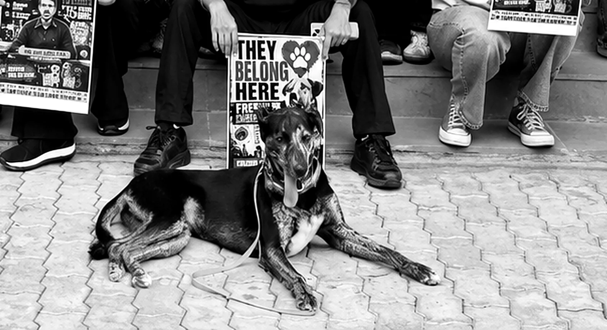

Newsroom
10 stories on the record
For the animals
4 stories
-
WelfarePFA Public Policy Foundation
A high-welfare pig housing model opens in Rishikesh
Built by the People for Animals Public Policy Foundation with Uttarakhand’s Animal Husbandry Department at Pashulok, the unit shows group housing and cage-free farrowing with room to nest, so that pigs can move freely and live healthier, calmer lives.
-
WildlifePeople for Animals, Chandigarh
A protected Indian roofed turtle saved from sale in Chandigarh
On a People for Animals complaint, police and the Forest and Wildlife Department stopped the sale of an Indian roofed turtle, a Schedule I species, registered an FIR under the Wildlife (Protection) Act and placed the turtle in the Department’s care.
-
BirdsPFA Wildlife Hospital, Bengaluru
Birds hurt by kite string, flying again within days
Over Sankranti, PFA’s wildlife hospital in Bengaluru treated birds cut by manja. A feather bank covering 32 species lets its vets replace damaged flight feathers, so a bird that once needed months to recover can fly again in days.
-
RescuePFA and HSI/India
Over 400 animals saved from the Gadhimai sacrifice given lifelong homes
With the Sashastra Seema Bal and the Bihar government, PFA and Humane Society International/India stopped animals being taken across the border for the festival. 347 goats and 74 buffaloes were rehomed, including at PFA Uttarakhand’s Happy Home Sanctuary.
CineKind
2 stories
-
CineKindMumbai
CineKind’s second edition announced in Mumbai
Maneka Gandhi, with the Film Federation of India's Abhay Sinha and Sandeep Marwah, announced the 2026 honours and called on cinema to become a voice for animals, since what audiences watch on screen shapes how they treat them.
-

CineKindKolkata
Ten honours at CineKind’s first edition
Presented by the Film Federation of India with People for Animals, in Kolkata on 20 December 2025.
Case file
Case 001, in full
Case 001 · Chandigarh
Removed for a VIP visit.
Returned by a city.
PEC had 35 community dogs picked up before the Prime Minister’s visit, then declined their return. Four offices, one protest, six states: the director cleared every single one.
Won under the Animal Birth Control Rules, 2023: community dogs return to the locality they came from.

01The removalDays before the Prime Minister’s visit, the municipal corporation picked up 35 community dogs from the PEC campus under VIP protocol.
02The escalationThe corporation declines to send the dogs back; PFA petitions four offices over their return.
03Six states show upA protest at the campus gates, placards up: Let them live free. Compassion not confinement. They belong here.
04Case closedThe director clears all 35 for return to the locality they came from, under the Animal Birth Control Rules, 2023.Resolved
From the ground
When something moves,
it lands here.
Cases are added as they resolve, with a record of how each one moved. If you have seen cruelty, report it; if you have footage, the Wall takes it.